<!-- OVERWORLD FOREST QUALITY — 2026-08-03. Plates rendered by tools/ow_probe/forest.js + ow_multi.mjs. -->
<meta charset="utf-8"><title>ow-valley — the forest</title>
<style>
 :root{--bg:#12141a;--fg:#e8e6e1;--dim:#9aa0aa;--line:#2a2e38;--up:#7fd18c;--dn:#e0806e;--acc:#d9a441}
 *{box-sizing:border-box}
 body{margin:0;background:var(--bg);color:var(--fg);font:15px/1.55 -apple-system,BlinkMacSystemFont,"Segoe UI",sans-serif}
 header{padding:28px 32px 20px;border-bottom:1px solid var(--line);max-width:1500px;margin:0 auto}
 h1{margin:0 0 6px;font-size:26px;letter-spacing:-.01em}
 .sub{color:var(--dim);max-width:82ch}
 main{max-width:1500px;margin:0 auto;padding:0 32px 90px}
 .bands{margin:22px 0 0;padding:16px 18px;border:1px solid var(--line);border-radius:8px;background:#171a21}
 .bands pre{margin:0;white-space:pre-wrap;font:12.5px/1.5 ui-monospace,SFMono-Regular,Menlo,monospace;color:#c9cdd6;overflow-x:auto}
 h2.sec{margin:52px 0 4px;font-size:22px;padding-top:26px;border-top:1px solid var(--line)}
 h3{margin:30px 0 2px;font-size:18px}
 h3 .tag{font-size:11px;letter-spacing:.08em;text-transform:uppercase;color:var(--acc);border:1px solid var(--acc);border-radius:3px;padding:2px 6px;margin-left:10px;vertical-align:2px}
 h3 .tag.cost{color:var(--up);border-color:var(--up)}
 .desc{color:var(--dim);font-size:13.5px;max-width:94ch;margin:0 0 14px}
 .row{display:grid;grid-template-columns:repeat(4,1fr);gap:12px;margin:14px 0 0}
 .pane{min-width:0;margin:0}
 .pane figcaption{font:12px/1.4 ui-monospace,Menlo,monospace;color:var(--dim);padding:7px 2px}
 .pane img{width:100%;height:auto;display:block;border-radius:5px;background:#000;border:1px solid var(--line)}
 .pane.is-before img{border-color:var(--dn)}
 .pane.is-before figcaption{color:var(--dn)}
 .why{margin:14px 0 0;padding:12px 14px;background:#171a21;border-left:3px solid var(--line);border-radius:0 6px 6px 0;font-size:13.5px;color:#c4c9d2;max-width:100ch}
 .why b{color:var(--fg)}
 table.sum{width:100%;border-collapse:collapse;margin:22px 0 10px;font:13px/1.45 ui-monospace,Menlo,monospace}
 table.sum th,table.sum td{padding:6px 9px;border-bottom:1px solid var(--line);text-align:left;vertical-align:top}
 table.sum th{color:var(--dim);font-weight:600}
 table.sum td.n{text-align:right;white-space:nowrap}
 td.up{color:var(--up)} td.dn{color:var(--dn)}
 .note{color:var(--dim);font-size:13px;max-width:96ch}
 mark{background:none;color:var(--acc)}
 @media (max-width:1100px){.row{grid-template-columns:repeat(2,1fr)}}
 @media (max-width:640px){.row{grid-template-columns:1fr}}
 @media (prefers-color-scheme:light){:root{--bg:#faf9f7;--fg:#1a1d23;--dim:#5c626c;--line:#e0dfdb;--up:#1f7a37;--dn:#a8331b;--acc:#9a6b12}
  .bands,.why{background:#f1efec}}
 :root[data-theme="light"]{--bg:#faf9f7;--fg:#1a1d23;--dim:#5c626c;--line:#e0dfdb;--up:#1f7a37;--dn:#a8331b;--acc:#9a6b12}
 :root[data-theme="light"] .bands,:root[data-theme="light"] .why{background:#f1efec}
 :root[data-theme="dark"]{--bg:#12141a;--fg:#e8e6e1;--dim:#9aa0aa;--line:#2a2e38;--up:#7fd18c;--dn:#e0806e;--acc:#d9a441}
 :root[data-theme="dark"] .bands,:root[data-theme="dark"] .why{background:#171a21}
</style>

<header>
<h1>ow&#8209;valley &mdash; the forest</h1>
<p class="sub"><strong>Your ruling drove this.</strong> Section&nbsp;A of the first probe (scatter, trodden way, scree)
is dead &mdash; <em>&ldquo;not convinced that &lsquo;adding more stuff&rsquo; is more important than &lsquo;improving the
quality of our existing stuff&rsquo;&rdquo;</em>. So nothing below adds volume: <mark>every candidate spends FEWER
triangles than the forest it replaces</mark>, and each states its own ledger. B1&nbsp;(glass river) is already
<strong>shipped</strong> &mdash; see the last section. Same four cameras as the first probe. Injected live over CDP;
the bundle is untouched by this page. <mark>Pick one, ask for a hybrid, or reject the lot.</mark></p>
</header>

<main>

<h2 class="sec">Why every tree in the region is the same tree</h2>
<p class="desc">The mechanism, not the symptom. Two separate systems build &ldquo;forest&rdquo; here and neither can
produce a varied treeline. Numbers below are measured on the shipped <code>scene.glb</code>
(connected components after welding by position &mdash; the vegetation meshes are unindexed, so a census that does not
weld first returns one &ldquo;tree&rdquo; per triangle).</p>

<div class="bands"><pre>1. THE STANDS ARE NOT MADE OF TREES.  tools/valley_veg.py builds whisperwood,
   farwall-crown and pocket-grove as BUSH MASSES: _lobe_sites() lays a jittered
   hex lattice at LOBE_SP = 3.8 m over the stand, stand_mass() grows one ellipsoid
   per site from ONE radius range and ONE height range, cull_interior() welds them
   into a single skin, and shell() sprays leaf cards over it.  THERE IS NO TRUNK
   ANYWHERE IN THAT CODE PATH.  Its own docstring says why: "at this scale a whole
   forest is the size of one of the reference's BUSHES, so build it like a bush."
   It is a hedge on purpose.  A stand cannot have species because a stand is not
   made of trees, and the same file records that the three PREVIOUS forests
   (blanket / crown domes / painted texture) were also one shape over a whole stand.
   35,240 of the region's 85,776 vegetation triangles are this.

2. THE SPECIMEN TREES HAVE ONE SILHOUETTE, AND IT IS ONE NUMBER WIDE.
   valley_build.plant_region only ever calls O3.TREE_FN 'a' and 'c'.  Both are a
   broadleaf ellipsoid crown on a 1.55 s trunk; 'c' just adds a card fringe.  The
   library's tree_b (card cluster) and tree_d (a recursive BRANCH SKELETON, the one
   form whose silhouette is made of structure and gaps) are never planted here, and
   there is no conifer in the library at all.  Per-tree variation is a single draw,
   s = rng.uniform(0.86, 1.26) -- everything scales together, so nothing changes
   SHAPE.  The lean is a fixed 0.10*s, always in the yaw direction.  Measured over
   the 500 crown lobes:  aspect w/h p05 0.94 -> p95 1.82.  Whole-tree slenderness
   h/w p05 0.74 -> p50 1.18 -> p95 1.73.  Every tree is a slightly different SIZE
   of the same tree.

3. THE WHOLE CANOPY IS ONE COLOUR, AND THIS IS THE SHARPEST NUMBER ON THE PAGE.
   Every crown triangle in the region is ow_f2_canopy with COLOR_0 from a single
   palette entry.  Per-crown mean luminance across all 500 lobes:
        mean 0.950   sd 0.0016   p05 0.948   p95 0.953
        green-minus-red:  mean 0.121   sd 0.0060
   That is a 0.17 % luminance spread over a 200 m corridor.  (The 310 distinct RGB
   values in the buffer are a within-crown shading ramp, not per-tree hue.)  For
   contrast the BUSH MASSES do vary: whisperwood's per-lobe luminance sd is 0.1002
   on a 0.278 mean -- which is why the hedge at least reads as lumpy while the
   specimen trees read as stamped.

4. AND THE TWO SYSTEMS NEVER MEET, WHICH IS WHY THE TRUNKS ARE INVISIBLE.
   plant_region refuses to place a specimen tree wherever zg.canopy_int > 0.5, and
   _stand_mask carves the road corridor out of the mass.  So the stands are pure
   hedge, the field is pure lollipop, and the ROAD is neither -- the first probe's
   census: veg_field 0 / 7 road samples, tree_field_trunks 0 / 7, within 15 m.
   The specimen trees are not hiding their trunks (measured bare trunk under the
   crown: p50 1.14 m of a p50 3.03 m tree).  They are simply never anywhere the
   camera is.  What stands beside the road is the trunkless mass.

VEGETATION BUDGET, shipped bundle: 85,776 tris of 150,528 region-wide -- 57 %.
   veg_field 38,740 · tree_field_trunks 9,792 · veg_field_cards 756
   veg_canopy_whisperwood 7,312 + cards 13,626
   veg_canopy_farwall-crown 4,570 + cards 9,422
   veg_canopy_pocket-grove 550 + cards 1,008</pre></div>

<h2 class="sec">Before &mdash; the four cameras</h2>
<p class="desc">The shipped forest, at the Emberbrook gate (boom&nbsp;16), on the gorge shelf at walking closeness
(boom&nbsp;12), on the shelf at the shipped follow camera (boom&nbsp;40) and on the Dellhollow approach
(boom&nbsp;40). Same positions as the first probe. <strong>These are the &ldquo;before&rdquo; in every row below.</strong></p>
<div class="row">
 <figure class="pane is-before">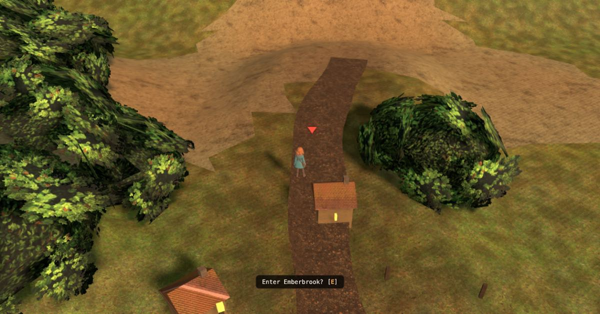<figcaption>BEFORE &middot; gate &middot; boom 16</figcaption></figure>
 <figure class="pane is-before">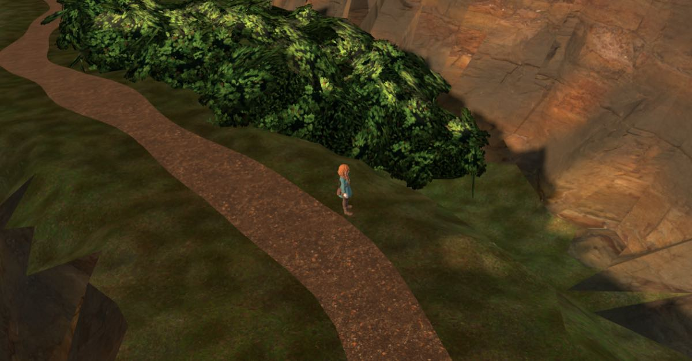<figcaption>BEFORE &middot; shelf &middot; boom 12</figcaption></figure>
 <figure class="pane is-before"><figcaption>BEFORE &middot; shelf &middot; boom 40 (SHIPPED)</figcaption></figure>
 <figure class="pane is-before">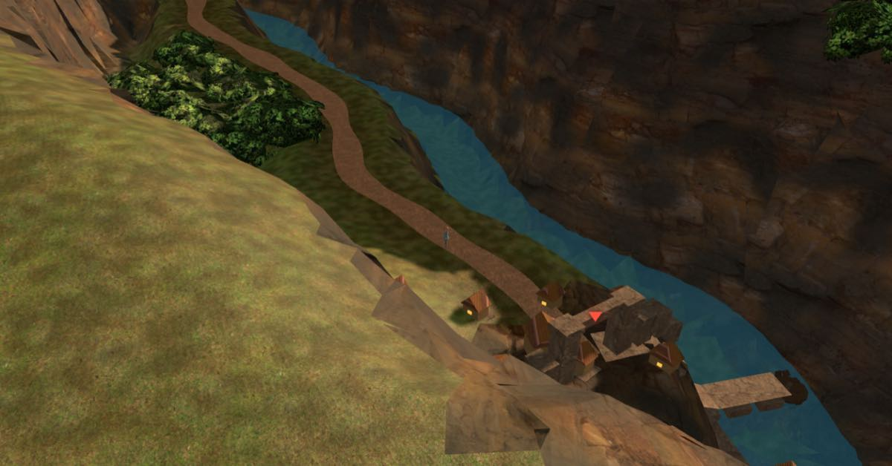<figcaption>BEFORE &middot; Dellhollow approach</figcaption></figure>
</div>
<div class="why"><b>What I see.</b> At the gate, two green masses flank the road and neither has a trunk, a stem or a
gap: they are hedges the size of a house, and their outline is one continuous lumpy curve. At walking closeness the
mass beside the road is a single mound &mdash; you cannot count trees in it and you cannot see into it. At boom 40 the
same mass reads as moss. On the Dellhollow approach the pocket grove is one bright yellow-green blob against the
gorge. <b>In all four the canopy is one hue.</b></div>

<h2 class="sec">F1 &mdash; tone and crown variance <span class="tag cost">+0 triangles</span></h2>
<p class="desc">The cheapest possible answer, and the one that tests whether &ldquo;one silhouette&rdquo; is really
&ldquo;one colour&rdquo;. Nothing moves, nothing is added, no mesh is touched: every crown and every bush lobe gets its
own draw from a green&#8594;olive&#8594;rust band on a 3.4&nbsp;m cell (a crown is 2.6&nbsp;m across, so the cell
<em>is</em> the crown), with a full stop of luminance spread either side. It is a multiplier on the shipped
<code>COLOR_0</code>, so the ratified autumn direction is respected rather than replaced.</p>
<div class="row">
 <figure class="pane is-before"><figcaption>BEFORE &middot; gate</figcaption></figure>
 <figure class="pane">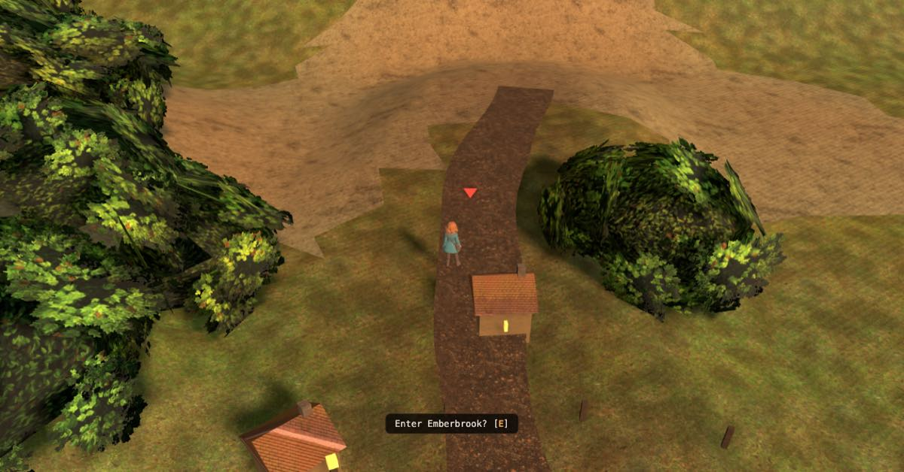<figcaption>F1 &middot; gate</figcaption></figure>
 <figure class="pane is-before"><figcaption>BEFORE &middot; shelf boom 12</figcaption></figure>
 <figure class="pane">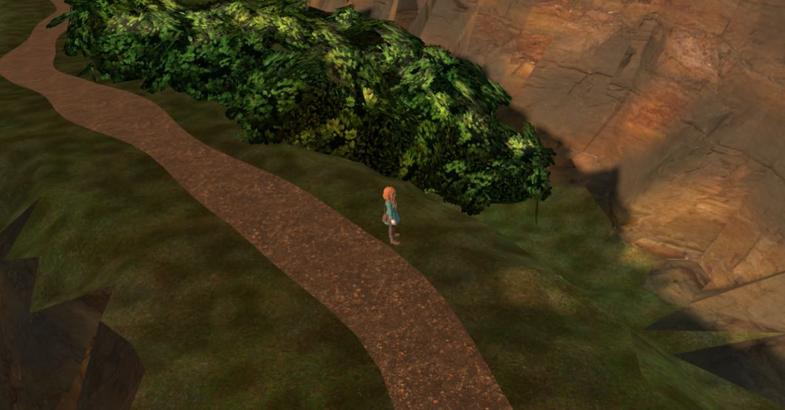<figcaption>F1 &middot; shelf boom 12</figcaption></figure>
</div>
<div class="row">
 <figure class="pane is-before"><figcaption>BEFORE &middot; shelf boom 40</figcaption></figure>
 <figure class="pane">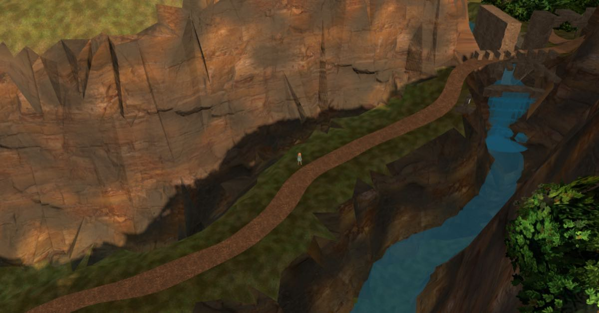<figcaption>F1 &middot; shelf boom 40</figcaption></figure>
 <figure class="pane is-before"><figcaption>BEFORE &middot; Dellhollow</figcaption></figure>
 <figure class="pane">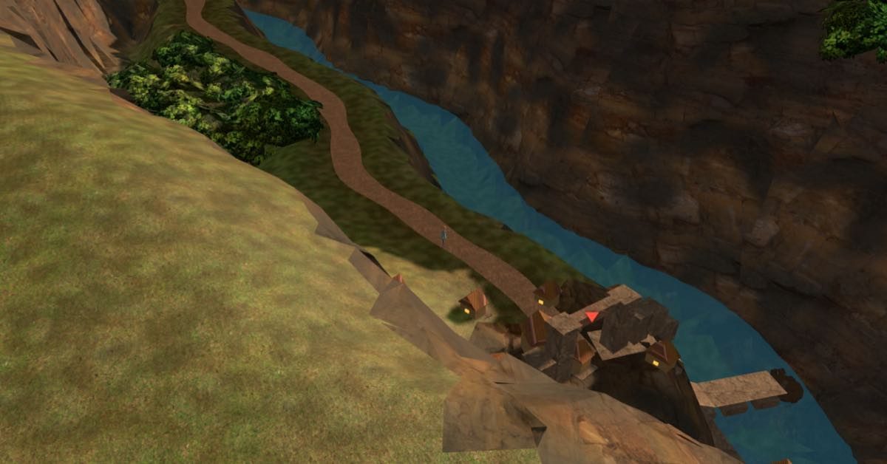<figcaption>F1 &middot; Dellhollow</figcaption></figure>
</div>
<div class="why"><b>What I see.</b> The masses now have warm olive and gold patches against deeper cool green, and at
the gate the right-hand mass reads as two or three different plants rather than one. It keeps the shipped foliage
detail exactly &mdash; the leaf-cluster cards are still there, and this is the only candidate that does not lose
them. <b>But the outline does not move.</b> It is the same lumpy curve in a better costume.<br><br>
<b>Measured.</b> Canopy hue spread <code>sd(G&minus;R)</code> 4.43&nbsp;&#8594;&nbsp;8.61 (+94&nbsp;%), but only
<strong>5.5&nbsp;% of pixels moved by more than 8/255</strong>. The eye is reading the silhouette, not the hue.<br><br>
<b>One thing this cost to learn:</b> the first version used multipliers in 0.8&ndash;1.2 and moved 0.8&nbsp;% of
pixels &mdash; invisible. Forcing <code>COLOR_0</code> to pure red on every vegetation mesh moved 16.8&nbsp;% and
turned the stand crimson, which proved the plumbing and located the fault in the <em>amplitude</em>. On a mapped
surface a tone draw has to be a real hue rotation or it is nothing.</div>

<h2 class="sec">F2 &mdash; species mix at the same budget <span class="tag cost">&minus;29,964 triangles</span></h2>
<p class="desc">Both populations rebuilt in place. The stands' bush lattice becomes <strong>one tree per lobe
site</strong> &mdash; same lattice, same footprint, same ground &mdash; and the specimen field is replanted on its own
recovered tree feet. Four forms share one material: broadleaf (112&nbsp;tris), <strong>conifer (48)</strong>,
scrub&nbsp;(112) and <strong>a bare snag (36)</strong>. 689 trees. Per-tree colour from the same autumn band as F1.
<em>Replacing one silhouette with four costs nothing, because the cheap silhouettes are the new ones.</em></p>
<div class="row">
 <figure class="pane is-before"><figcaption>BEFORE &middot; gate</figcaption></figure>
 <figure class="pane">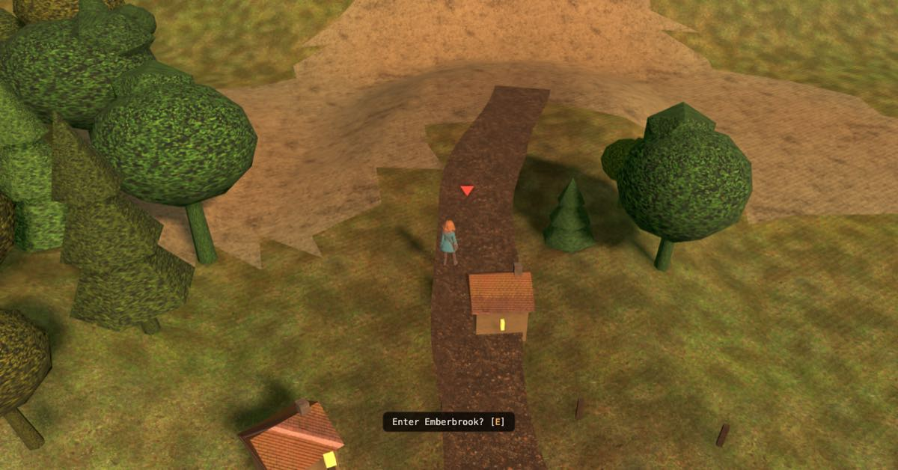<figcaption>F2 &middot; gate</figcaption></figure>
 <figure class="pane is-before"><figcaption>BEFORE &middot; shelf boom 12</figcaption></figure>
 <figure class="pane">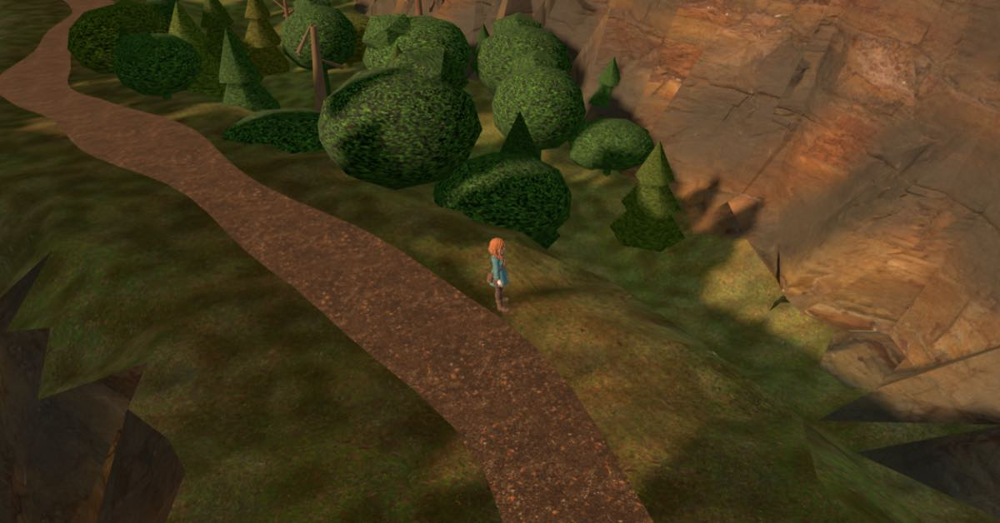<figcaption>F2 &middot; shelf boom 12</figcaption></figure>
</div>
<div class="row">
 <figure class="pane is-before"><figcaption>BEFORE &middot; shelf boom 40</figcaption></figure>
 <figure class="pane">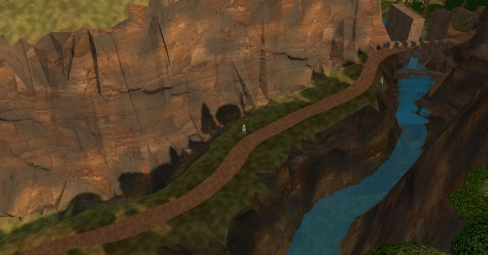<figcaption>F2 &middot; shelf boom 40</figcaption></figure>
 <figure class="pane is-before"><figcaption>BEFORE &middot; Dellhollow</figcaption></figure>
 <figure class="pane">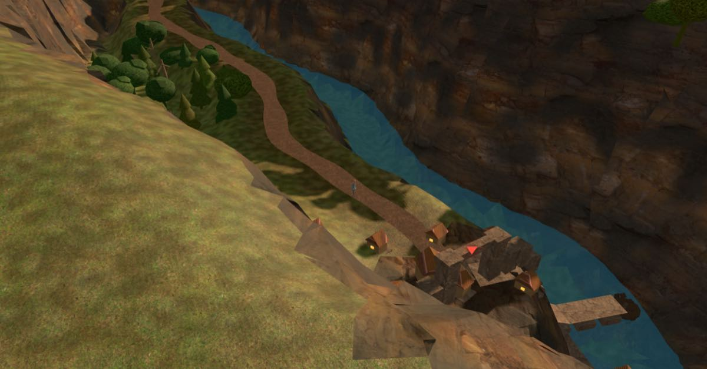<figcaption>F2 &middot; Dellhollow</figcaption></figure>
</div>
<div class="why"><b>What I see.</b> At the gate the two hedges are now a wood: individual crowns at different heights,
one conifer spire standing clear on the right, and bare trunks visible under the left group. At walking closeness you
can count the trees and see between them; two pale trunks read against the dark rock. <b>The strongest frame is the
Dellhollow approach</b> &mdash; at boom 40 the pocket grove goes from one yellow-green blob to a legible treeline with
conifer points in it, which is the distance the player actually spends most of the walk at.<br><br>
<b>What it loses, honestly.</b> The shipped bush mass carries a real leaf-cluster card shell on a foliage atlas
(<code>tools/bushlang.py</code>, <code>foliage_atlas.py</code>) and my instanced crowns do not: at boom 12 they read
a little smooth and toy-like next to the before frame's detail. That is a property of the preview, not of the
direction &mdash; the card shell is per-surface and can be hung on individual crowns exactly as it is hung on the
mass today. See the recommendation.</div>

<h2 class="sec">F3 &mdash; layered forest, one species <span class="tag cost">&minus;14,880 triangles</span></h2>
<p class="desc">The other hypothesis, isolated: <strong>the wood is flat because it has no vertical range and no
holes, not because it has one species.</strong> Same broadleaf everywhere, <strong>no colour trick at all</strong>
(flat palette, so this row is a clean read on shape alone). Three storeys instead of one: emergents at ~6.4&nbsp;m
standing well clear of the roof, a main canopy at ~3.4&nbsp;m varying 2&times; rather than 1.4&times;, an understory
at ~1.9&nbsp;m, and 8&nbsp;% of sites dropped outright so the wood has gaps to see trunks and sky through. 633 trees.</p>
<div class="row">
 <figure class="pane is-before"><figcaption>BEFORE &middot; gate</figcaption></figure>
 <figure class="pane">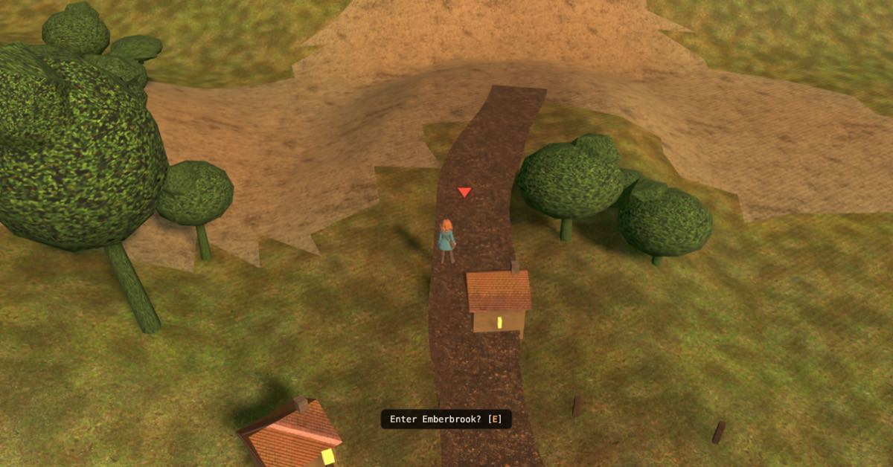<figcaption>F3 &middot; gate</figcaption></figure>
 <figure class="pane is-before"><figcaption>BEFORE &middot; shelf boom 12</figcaption></figure>
 <figure class="pane">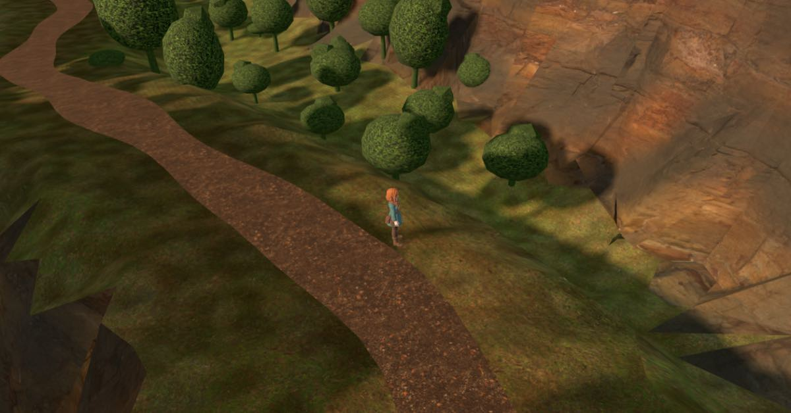<figcaption>F3 &middot; shelf boom 12</figcaption></figure>
</div>
<div class="row">
 <figure class="pane is-before"><figcaption>BEFORE &middot; shelf boom 40</figcaption></figure>
 <figure class="pane">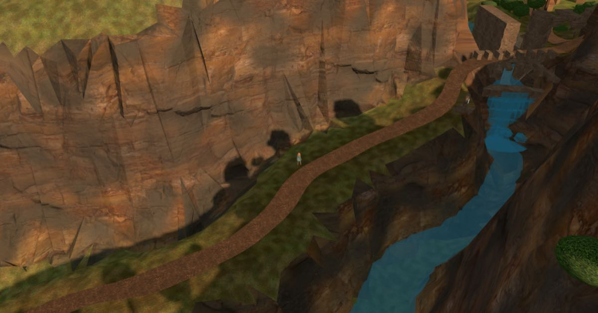<figcaption>F3 &middot; shelf boom 40</figcaption></figure>
 <figure class="pane is-before"><figcaption>BEFORE &middot; Dellhollow</figcaption></figure>
 <figure class="pane">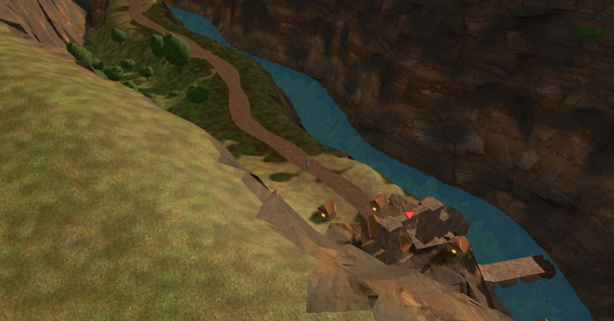<figcaption>F3 &middot; Dellhollow</figcaption></figure>
</div>
<div class="why"><b>What I see.</b> A tall, open, parkland wood. The height range does most of the work: at the gate a
big emergent with a thick clear trunk anchors the left and smaller crowns step down behind it, and at boom 12 the
shelf reads as a place with a floor you could walk on. <b>It is the most legible of the three at close range and the
weakest at boom 40</b> &mdash; without the species contrast the far treeline is still one repeated round crown, just
at more sizes. Compare F2's Dellhollow frame against this one; that pair is the clearest evidence on the page that
<em>shape variety beats size variety at distance</em>.<br><br>
<b>One thing this cost to learn:</b> the first F3 dropped 18&nbsp;% of sites and used a 20-triangle understory. At the
Emberbrook gate the two stands came back as five scattered bushes and the seam read <em>emptier</em> than the hedge
did &mdash; the one outcome this lane is not allowed to produce. 8&nbsp;% and a real understory crown. Recorded
because &ldquo;thin it out&rdquo; is exactly the instinct that reads as quality on a still and as a bare map in play.</div>

<h2 class="sec">The ledger</h2>
<table class="sum">
<tr><th>&nbsp;</th><th class="n">triangles in</th><th class="n">triangles out</th><th class="n">net</th><th>silhouettes</th><th>per&#8209;tree colour</th><th>keeps the leaf&#8209;card shell</th></tr>
<tr><td>shipped forest</td><td class="n">&mdash;</td><td class="n">&mdash;</td><td class="n">85,776</td><td>1</td><td>no (sd 0.0016)</td><td>yes</td></tr>
<tr><td>F1 tone variance</td><td class="n">0</td><td class="n">0</td><td class="n up">&plusmn;0</td><td>1</td><td>yes</td><td>yes</td></tr>
<tr><td>F2 species mix</td><td class="n">55,812</td><td class="n">85,776</td><td class="n up">&minus;29,964</td><td>4</td><td>yes</td><td>no (preview only)</td></tr>
<tr><td>F3 layered</td><td class="n">70,896</td><td class="n">85,776</td><td class="n up">&minus;14,880</td><td>2, at 3 heights</td><td>no (deliberately)</td><td>no (preview only)</td></tr>
</table>
<p class="note">Every candidate is <em>cheaper</em> than what it replaces. That is not a coincidence: the shipped
forest spends 85,776 triangles on 689 plants because a lobed skin with a card shell costs ~124 triangles per site and
a conifer costs 48. Variety was never the expensive part.</p>

<h2 class="sec">What I would do &mdash; and this is mine to reject</h2>
<div class="why">
<b>F2, with F1 folded into it, and the leaf-card shell carried over.</b> Three reasons, in the order they were
measured.<br><br>
<b>1.</b> F1 alone moves 5.5&nbsp;% of pixels. It is real and it is free, but on its own it does not answer the
complaint &mdash; the outline is unchanged in all four frames.<br>
<b>2.</b> F2 and F3 both answer it at walking closeness. They split at boom 40, where the player spends the walk: F2's
conifers still read as a treeline and F3's size-varied round crowns do not. Shape variety survives distance; size
variety does not.<br>
<b>3.</b> F2's only real loss is surface detail, and that loss is an artefact of the preview. The card shell is
already a general mechanism &mdash; <code>bushlang.Mass.shell()</code> sprays leaf-cluster cards over <em>any</em>
surface. Today it is handed one stand-wide skin. Handing it a few hundred individual crowns instead is the same code
with a different input, and it would put the shipped foliage detail on F2's silhouettes.<br><br>
<b>Cheapest honest shipping order,</b> if you want it staged: F1 first (it is a palette change in
<code>valley_build</code>, no rebuild of the stands, no risk), then F2 as a real change to
<code>valley_veg.build_canopy</code> &mdash; that function is where the hedge is decided, and it is where a wood would
be decided instead.<br><br>
<b>What I am NOT recommending, and why.</b> No new scatter, no props, no waymarkers &mdash; that was ruled out and
none of this needs it. I also would not touch the tree scale: a tree here is p50 3.03&nbsp;m against a 1.45&nbsp;m
body (2.09&times;), which looks short for a tree, but the impression cottages are 1.6&nbsp;m ridge by contract
(<code>VM.HOUSE_RIDGE</code>) &mdash; so the trees are consistent with the miniature the region is built as, and
re-scaling them is a decision about the whole region, not about the forest. It belongs with weakness&nbsp;5 from the
first probe.
</div>

<h2 class="sec">Also shipped tonight &mdash; B1, the glass river</h2>
<p class="desc">Your pick from the first probe, committed in <code>896ec23</code>. Not a candidate; it is in the bundle.</p>
<div class="bands"><pre>THE BUG UNDERNEATH THE TASTE CALL.  new_mat(..., alpha=0.82, blend=True) sets the
BSDF Alpha default AND links COLOR_0's alpha into the same socket.  The link wins.
Measured in the shipped bundle before the change: ow_f2_water carried NO
baseColorFactor at all, and COLOR_0 alpha was 1.000 on every water vertex --
672 river + 2,496 falls + 1,212 tributaries + 108 pool.  The 0.82 was a
Blender-only number for four weeks.  The river was 100 % opaque and nobody meant
it to be.

NOW:  baseColorFactor [0.5210, 0.7913, 0.8550, 0.62], roughness 0.06, metallic 0,
alphaMode BLEND -- three's GLTFLoader supplies transparent + depthWrite:false
itself.  Looked at from the gorge shelf and the Dellhollow approach: the riverbed's
rock modelling reads through the pale blue, the surface takes tonal variation
across its facets instead of one flat cyan, and there is a specular sheen where
the weir pools.</pre></div>

<p class="note" style="margin-top:34px">Plates: <code>tools/ow_probe/forest.js</code> +
<code>tools/ow_probe/ow_multi.mjs</code>, 16 frames from one Chrome launch, injected over CDP into the live
<code>ow-valley</code> render. Measurements: <code>docs/qa/DAYLOG.md</code>, 2026-08-03 forest entry. The bundle was
changed by B1 only.</p>

</main>
